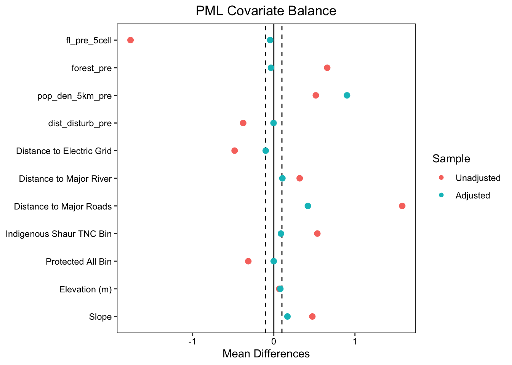
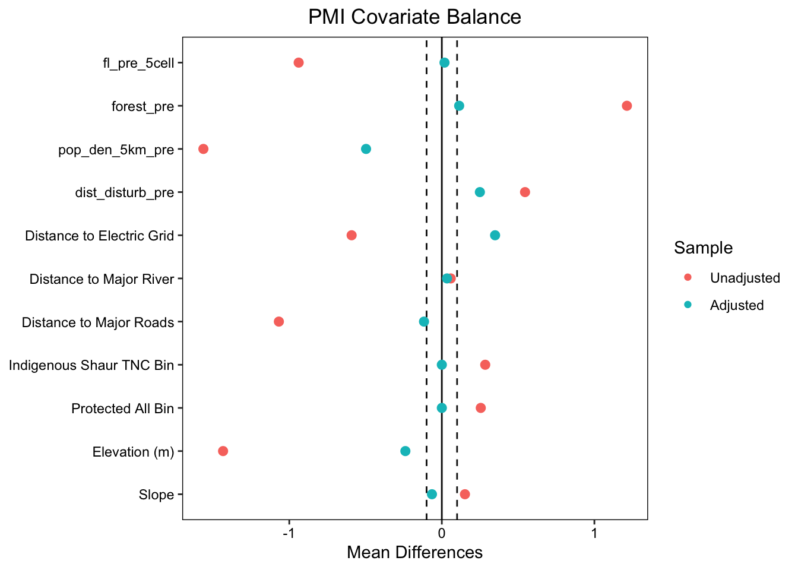
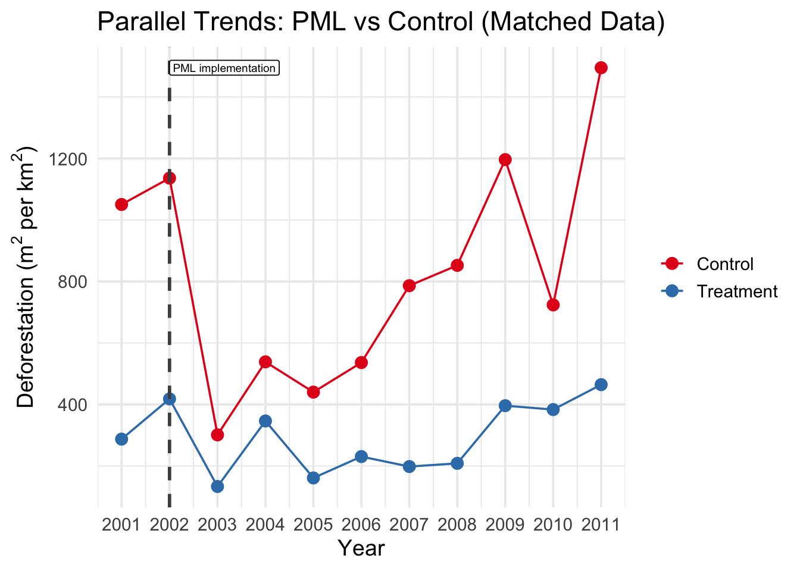
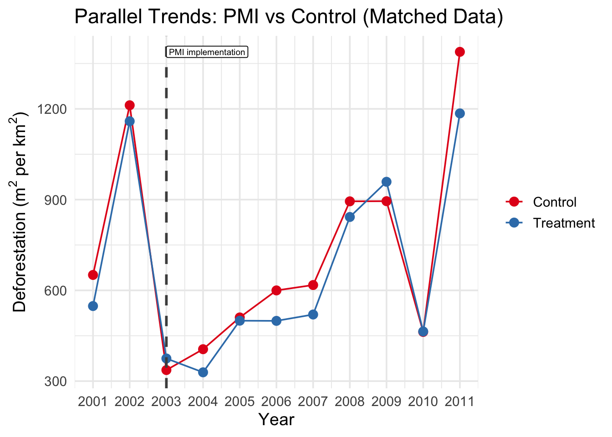
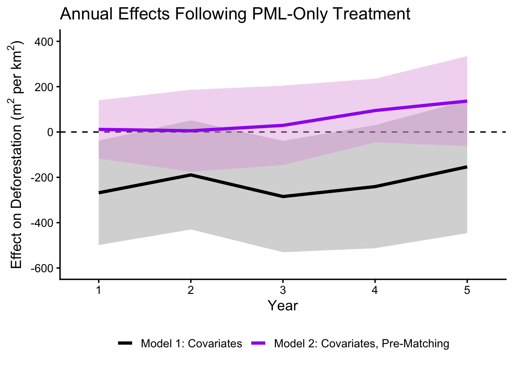
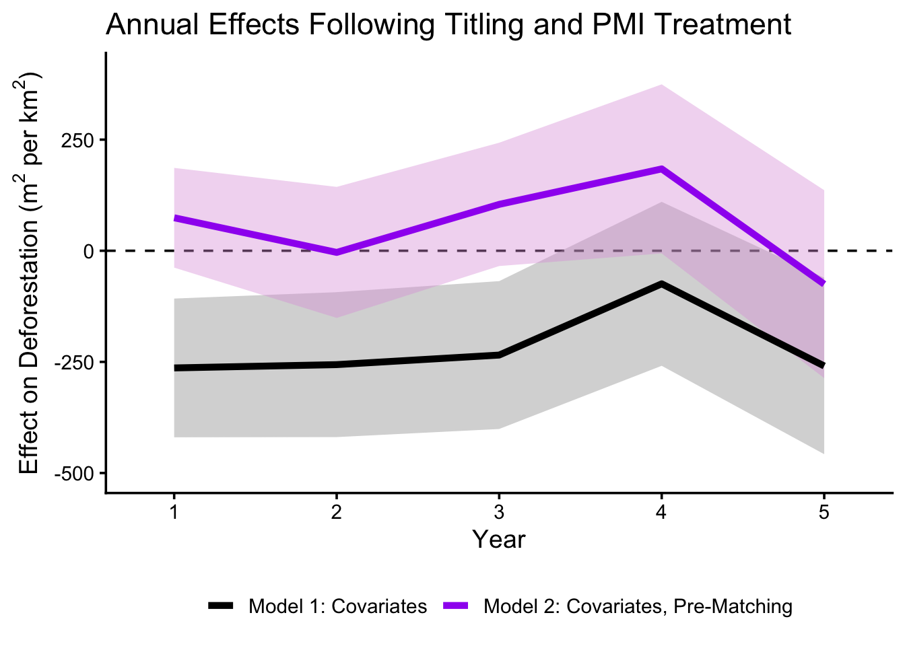

Show the code
# Load in necessary Libraries
library(tidyverse)
library(dplyr)
library(MatchIt)
library(knitr)
library(kableExtra)
library(cobalt)
library(gt)
library(patchwork)Jaslyn Miura, Isabella Segarra, Richard Montes Lemus
March 19, 2026
International aid donors, government agencies and conservation organizations worldwide agree that assigning indigenous communities titles or formal property rights to land prevents deforestation. Since the 1970s, $7.8 billion dollars have been invested in land titling programs globally, however there is little evidence that this is an effective intervention for deforestation. In the paper, Titling community land to prevent deforestation: An evaluation of a best-case program in Morona-Santiago, Ecuador, Buntaine et al. evaluated a funded land titling and land management program for indigenous communities in Ecuador. The Programa de Sostenibilidad y Unión Regional Sur (PSUR) was a $27 million USAID-funded project that titled over 170,000 hectares of indigenous land along the Peru-Ecuador border. The author investigated this intervention using a difference-in-differences design, matching plots inside program areas to similar plots outside to estimate land titling’s effect on deforestation.
An R script that runs the analyses made in the study was publicly available along with the associated study data. While the code provided a framework for us to replicate the study, we’ve re-factored and tidy-ed the code to make it more reproducible. We’ve also implemented different analysis methods within our replication due to the scale of the data, as authors have warned that the some aspects of the original code has long run times (over 10+ hours). Our approach in our replication is to implement the methods we’ve learned in class to compare our results to the original study, to further understand and justify the methodological steps made by authors.
# Read in the data.
data <- read_csv(here::here("posts",
"eds241-blog-post",
"data",
"BHM_sample20.csv"))
# Treatment variables
data$PML <- ifelse(data$A352 == 0, 0, 1)
data$PMI <- ifelse(data$A352 >= 3, 1, 0) #Note: all PSUR intervention had PMI in 2003 and after
names(data)[287:298] <- c("fl.2001", "fl.2002", "fl.2003", "fl.2004", "fl.2005",
"fl.2006", "fl.2007", "fl.2008", "fl.2009", "fl.2010",
"fl.2011", "fl.2012")
data$toPeru.km <- data$A486/1000
# This function remakes the data frame with only the specified columns & NAs removed:
make <- function(data, names) {
# capture unquoted variable names.
vars <- as.character(substitute(names))[-1]
# Subset and remove NA rows.
data.make <- data[, vars, drop = FALSE]
data.make <- na.omit(data.make)
# Print number of observations.
cat("ob =", nrow(data.make), "\n")
return(data.make)
}
# Cleaning the datasets based on years within the study time frame.
wave_2002 <- data %>%
# Keep A352 == 0 or 2
filter(A352 %in% c(0, 2)) %>%
mutate(
# Post PML totals + each year
fl_5yr_postPML = fl.2003 + fl.2004 + fl.2005 + fl.2006 + fl.2007,
fl_yr1 = fl.2003,
fl_yr2 = fl.2004,
fl_yr3 = fl.2005,
fl_yr4 = fl.2006,
fl_yr5 = fl.2007,
# Pre vars
fl_pre_5cell = fl.2001 + A393 + A461,
# Same as wave.2002[,314] - wave.2002[,287]
forest_pre = .[[314]] - .[[287]],
pop_den_1km_pre = A173,
pop_den_5km_pre = A176,
pop_den_10km_pre = A174,
dist_disturb_pre = A116,
wave = "two") %>%
# Final filters
filter(forest_pre > 450000, A346 == 0)
wave_2003 <- data %>%
filter(A352 %in% c(0, 3)) %>%
mutate(
# 5-year post-PML sum + each year
fl_5yr_postPML = fl.2004 + fl.2005 + fl.2006 + fl.2007 + fl.2008,
fl_yr1 = fl.2004,
fl_yr2 = fl.2005,
fl_yr3 = fl.2006,
fl_yr4 = fl.2007,
fl_yr5 = fl.2008,
# Pre variables
fl_pre_5cell = fl.2002 + A394 + A462,
# Forest.pre = col314 - rowSums(cols 287:288)
forest_pre = .[[314]] - rowSums(across(all_of(287:288)), na.rm = TRUE),
pop_den_1km_pre = A178,
pop_den_5km_pre = A181,
pop_den_10km_pre = A179,
dist_disturb_pre = A117,
wave = "three") %>%
filter(forest_pre > 450000, A346 == 0)
wave_2004 <- data %>%
filter(A352 == 0) %>%
mutate(
# 5-year post-PML sum + each year
fl_5yr_postPML = rowSums(across(fl.2005:fl.2009), na.rm = TRUE),
fl_yr1 = fl.2005,
fl_yr2 = fl.2006,
fl_yr3 = fl.2007,
fl_yr4 = fl.2008,
fl_yr5 = fl.2009,
# Pre variables
fl_pre_5cell = fl.2003 + A395 + A463,
# Forest.pre = col314 - rowSums(cols 287:289)
forest_pre = .[[314]] - rowSums(across(all_of(287:289)), na.rm = TRUE),
pop_den_1km_pre = A183,
pop_den_5km_pre = A186,
pop_den_10km_pre = A184,
dist_disturb_pre = A118,
wave = "four") %>%
filter(forest_pre > 450000, A346 == 0)
wave_2005 <- data %>%
filter(A352 %in% c(0, 5)) %>%
mutate(
# 5-year post-PML sum + each year
fl_5yr_postPML = rowSums(across(fl.2006:fl.2010), na.rm = TRUE),
fl_yr1 = fl.2006,
fl_yr2 = fl.2007,
fl_yr3 = fl.2008,
fl_yr4 = fl.2009,
fl_yr5 = fl.2010,
# Pre variables
fl_pre_5cell = fl.2004 + A396 + A464,
# Forest.pre = col314 - rowSums(cols 287:290)
forest_pre = .[[314]] - rowSums(across(all_of(287:290)), na.rm = TRUE),
pop_den_1km_pre = A188,
pop_den_5km_pre = A191,
pop_den_10km_pre = A189,
dist_disturb_pre = A119,
wave = "five") %>%
filter(forest_pre > 450000, A346 == 0)
wave_2006 <- data %>%
filter(A352 %in% c(0, 6)) %>%
mutate(
# 5-year post-PML sum + each year
fl_5yr_postPML = rowSums(across(fl.2007:fl.2011), na.rm = TRUE),
fl_yr1 = fl.2007,
fl_yr2 = fl.2008,
fl_yr3 = fl.2009,
fl_yr4 = fl.2010,
fl_yr5 = fl.2011,
# Pre variables
fl_pre_5cell = fl.2005 + A397 + A465,
# Forest.pre = col314 - rowSums(cols 287:291)
forest_pre = .[[314]] - rowSums(across(all_of(287:291)), na.rm = TRUE),
pop_den_1km_pre = A193,
pop_den_5km_pre = A196,
pop_den_10km_pre = A194,
dist_disturb_pre = A120,
wave = "six") %>%
filter(forest_pre > 450000, A346 == 0)
wave_2007 <- data %>%
filter(A352 %in% c(0, 7)) %>%
mutate(
# 5-year post-PML sum + each year
fl_5yr_postPML = rowSums(across(fl.2008:fl.2012), na.rm = TRUE),
fl_yr1 = fl.2008,
fl_yr2 = fl.2009,
fl_yr3 = fl.2010,
fl_yr4 = fl.2011,
fl_yr5 = fl.2012,
# Pre variables
fl_pre_5cell = fl.2006 + A398 + A466,
# Forest.pre = col314 - rowSums(cols 287:292)
forest_pre = .[[314]] - rowSums(across(all_of(287:292)), na.rm = TRUE),
pop_den_1km_pre = A198,
pop_den_5km_pre = A201,
pop_den_10km_pre = A199,
dist_disturb_pre = A121,
wave = "seven") %>%
filter(forest_pre > 450000, A346 == 0)
# Combine the different yearly datasets into one.
data_flat <- rbind(wave_2002, wave_2003, wave_2004, wave_2005, wave_2006, wave_2007)The dataset used to reproduce the analysis in Buntaine et al. (2015) was constructed in GIS by overlaying several spatial datasets across a regular grid of 27,984 cells (~0.87 km² each) covering the Morona-Santiago province of Ecuador. Each grid cell represents the fundamental unit of observation, and raster and vector datasets covering the period 2001–2012 were extracted to the centroid of each cell to produce a tabular database. The raw dataset contains 27,984 observations with 395 variables. Each observation is identified with an OBJECTID and a pointID, geographic coordinates, and the relevant covariates in the study, encoded as A100 to A486 with variable definitions stored in associated metadata.
This dataset was cleaned to produce a “flat” dataset where each row is a plot-wave combination. Waves (A352) to represent the years where land titling was implemented under PSUR. Wave 2 corresponds to communities titled in 2002, wave 3 to communities titled in 2003, and so on through wave 7. Untreated control plots (A352 == 0) appear in multiple waves, each time with covariates and outcomes aligned to each wave’s treatment year, allowing them to serve as counterfactuals. Each plot-wave combination has variables associated with the outcome (fl.5yr.postPML) or forest loss five years after wave’s treatment, pre-treatment covariates measured before the wave’s treatment, and an associated control plot.
Pre-treatment covariates are constructed in two ways. Time-varying covariates, such as population density (pop.den.1km.pre), are measured annually and stored in successive columns, with each wave assigned the most recent pre-treatment value. Forest loss was calculated spatially and is a composite of three calculations: 1) forest loss in the plot itself in the year before treatment (e.g., fl.2001); 2) forest loss in the surrounding 3x3 neighborhood, and 3) forest loss in the surrounding 5x5 neighborhood. To produce fl.pre, forest loss was subtracted from total forest cover. Other variables such as distance to roads, distance to rivers, protected area status, were fixed in the dataset since they do not change year to year.
Outcome variables were PML (Plan de Manejo para Legalización) and PMI (Plan de Manejo Integral). PML (A352 == 2) was determined by plots that received land title without a community management plan in 2002 and PMI was determined by plots titled in 2003 or later (A352 == 3, etc.) that received a title and management plan.
The causal identification approach used in the study is Difference in Difference. Authors conducted a Difference in Difference analysis by determining the difference between the treatment and control plots using ordinary least squares regression.
Since the assignment of land titling (PSUR interventions) were implemented in areas where levels of deforestation were already low compared to the control areas. This means that before any intervention took place, treated and control plots already differed due to covariates such as distance to disturbed land (dist_disturb_pre), forest cover (forest_pre), and population density (pop_den_5km_pre). These covariates would exaggerate effects of the program, as the covariates would make it seem as though there is a significant difference when there really might not be. This is a form of selection bias.
To account for this selection bias, researchers used matching. This involves matching control plots to treated plots with similar pre-treatment covariate distributions. This creates a valid counterfactual of balanced comparison, where the matched control group will now reflect what would happen to treated plots with no intervention.
In Buntaine et al., genetic matching is used, however in the code they provided it is noted that the runing times are long. Therefore, we decided to apply an alternative matching method that we’ve learned within our Environmental Policy Evaluation class. As a substitute, we used the Mahalanobis matching method as a way to still implement a matching method and compare how the results from our replication differ from the real study results. Since the Mahalanobis method uses nearest neighbor based on a distance metric there may still be remnants of bias, as this method does not optimize balance like genetic matching does. Mahalanobis is an okay alternative for us since our sample size is large with covariates that are already fairly balanced.
The code below executes the matching method. Then creates a love plot to determine how well the covariates are balanced, after matching.
### Matching Data.
# Subset data where PML true.
data_PMLonly_flat <- subset(data_flat, PML == 0 | (PML == 1 & PMI == 0))
# Matching for PML data.
data_make <- make(data_PMLonly_flat,
c(fl_5yr_postPML, fl_yr1, fl_yr2, fl_yr3, fl_yr4, fl_yr5,
PML, fl_pre_5cell, forest_pre, pop_den_5km_pre,
dist_disturb_pre, A128, A129, A130, A154, A347, A361, A362, LAT, LONG))
# Using the Mahlanobis matching method
out_PMLonly_flat <- matchit(PML ~ fl_pre_5cell +
forest_pre +
pop_den_5km_pre +
dist_disturb_pre +
A128 + A129 + A130 + A154 + A347 + A361 + A362,
data = data_make,
method = "nearest",
distance = "mahalanobis",
discard = "none",
ratio = 1)
# Summary of covariate balance after matching
s_PML <- summary(out_PMLonly_flat, interactions = T, standardize = T)
s_sum_matched_PML <- as.data.frame(s_PML$sum.matched)
# Matched dataframe.
data_PMLonly_flat_matched <- match.data(out_PMLonly_flat)
# Subset data where PML and PMI is true.
data_PMI_flat <- subset(data_flat, PML == 0 | (PML == 1 & PMI == 1))
data_make_2 <- make(data_PMI_flat,
c(fl_5yr_postPML, fl_yr1, fl_yr2, fl_yr3, fl_yr4, fl_yr5,
PMI, fl_pre_5cell, forest_pre, pop_den_5km_pre,
dist_disturb_pre, A128, A129, A130, A154, A347, A361, A362, LAT, LONG))
# Using the Mahlanobis matching method
out_PMI_flat <- matchit(PMI ~ fl_pre_5cell +
forest_pre +
pop_den_5km_pre +
dist_disturb_pre +
A128 + A129 + A130 + A154 + A347 + A361 + A362,
data = data_make_2,
method = "nearest",
distance = "mahalanobis",
discard = "none",
ratio = 1)
# Summary of covariate balance after matching
s_PMI <- summary(out_PMI_flat, interactions = T, standardize = T)
s_sum_matched_PMI <- as.data.frame(s_PMI$sum.matched)
# Matched data frame.
data_PMI_flat_matched <- match.data(out_PMI_flat)# Define shortened variable names.
new_names <- data.frame(
old = c("fl_pre_5cell", "forest_pre", "pop_den_5km_pre", "dist_disturb-pre", "A128", "A129", "A130", "A154", "A347", "A361", "A362"),
new = c("fl_pre_5cell", "forest_pre", "pop_den_5km_pre", "dist_disturb-pre", "Distance to Electric Grid", "Distance to Major River", "Distance to Major Roads", "Indigenous Shaur TNC Bin", "Protected All Bin", "Elevation (m)", "Slope"))
# Love plot
love_PML <- love.plot(out_PMLonly_flat, stats = "mean.diffs",
thresholds = c(m = 0.1),
var.names = new_names,
title = "PML Covariate Balance")
love_PML

The PML covariates are well balanced since the mean differences fall within the threshold around 0, except for pop_den_5km_pre.
The PMI covariates are also well balanced since the mead differences fall within the threshold around 0, except for pop_den_5km_pre, dist_distrub_pre, Distance to Electric Grid, and Elevation.
Parallel Assumption: Treatment and Control groups were moving in the same direction before the intervention began.
If the treated and control groups’ deforestation trends were different prior to intervention, we are unable to determine the difference between the pre-existing difference and the effect of the intervention. Therefore, the parallel assumption must be true to implement a Difference in Difference causal identification approach for this study.
data_PMLonly_flat_matched <- match.data(out_PMLonly_flat)
# Join yearly columns from data using coordinates
parallel_matched <- data_PMLonly_flat_matched %>%
left_join(data %>% select(LONG, LAT, fl.2001:fl.2011),
by = c("LONG", "LAT"))
matched_ids <- rownames(data_PMLonly_flat_matched)
parallel_matched <- data[matched_ids, ] %>%
mutate(PML = data_PMLonly_flat_matched$PML) %>%
select(fl.2001, fl.2002, fl.2003, fl.2004, fl.2005,
fl.2006, fl.2007, fl.2008, fl.2009, fl.2010, fl.2011, PML) %>%
pivot_longer(cols = starts_with("fl."),
names_to = "year",
values_to = "deforestation") %>%
mutate(year = as.numeric(str_remove(year, "fl\\.")))
parallel_trends_matched <- parallel_matched %>%
group_by(year, PML) %>%
summarise(mean_deforestation = mean(deforestation, na.rm = TRUE),
.groups = "drop")
ggplot(parallel_trends_matched,
aes(x = year, y = mean_deforestation, color = factor(PML))) +
geom_line() +
geom_point(size = 3) +
geom_vline(xintercept = 2002, linetype = "dashed", color = "gray30", linewidth = 1) +
annotate("label", x = 2002, y = max(parallel_trends_matched$mean_deforestation),
label = "PML implementation", hjust = 0, size = 2.5) +
scale_x_continuous(breaks = seq(2001, 2011, by = 1)) +
labs(
title = "Parallel Trends: PML vs Control (Matched Data)",
x = "Year",
y = expression(paste("Deforestation (", m^2, " per ", km^2, ")"))
) +
scale_color_brewer(palette = "Set1",
labels = c("0" = "Control",
"1" = "Treatment")) +
theme_minimal(base_size = 14) +
theme(legend.title = element_blank())
data_PMI_flat_matched <- match.data(out_PMI_flat)
# Join yearly columns from data using coordinates
parallel_matched_2 <- data_PMI_flat_matched %>%
left_join(data %>% select(LONG, LAT, fl.2001:fl.2011),
by = c("LONG", "LAT"))
matched_ids_2 <- rownames(data_PMI_flat_matched)
parallel_matched_2 <- data[matched_ids_2, ] %>%
mutate(PMI = data_PMI_flat_matched$PMI) %>%
select(fl.2001, fl.2002, fl.2003, fl.2004, fl.2005,
fl.2006, fl.2007, fl.2008, fl.2009, fl.2010, fl.2011, PMI) %>%
pivot_longer(cols = starts_with("fl."),
names_to = "year",
values_to = "deforestation") %>%
mutate(year = as.numeric(str_remove(year, "fl\\.")))
parallel_trends_matched_2 <- parallel_matched_2 %>%
group_by(year, PMI) %>%
summarise(mean_deforestation = mean(deforestation, na.rm = TRUE),
.groups = "drop")
ggplot(parallel_trends_matched_2,
aes(x = year, y = mean_deforestation, color = factor(PMI))) +
geom_line() +
geom_point(size = 3) +
geom_vline(xintercept = 2003, linetype = "dashed", color = "gray30", linewidth = 1) +
annotate("label", x = 2003, y = max(parallel_trends_matched_2$mean_deforestation),
label = "PMI implementation", hjust = 0, size = 2.5) +
scale_x_continuous(breaks = seq(2001, 2011, by = 1)) +
labs(
title = "Parallel Trends: PMI vs Control (Matched Data)",
x = "Year",
y = expression(paste("Deforestation (", m^2, " per ", km^2, ")"))
) +
scale_color_brewer(palette = "Set1",
labels = c("0" = "Control",
"1" = "Treatment")) +
theme_minimal(base_size = 14) +
theme(legend.title = element_blank())
Assumption Interpretation:
It appears that before treatment, the study areas of the PML intervention do not follow the same trends. While the study ares of the PMI intervention follow similar trends. In addition, the authors only include pre-treatment data from 2001 and beyond; this does not provide enough data to determine whether the treatment and control groups followed parallel trends. Therefore, this implies that the parallel trends assumption is not met, and therefore, the control groups, especially for the PML intervention, may not provide a good counterfactual for the treatment group.
Creating Model 1
Model 1 is a linear regression model using the outcome variables, forest loss (fl_yr) on the treatment, Land Legalization Plans (PML), and the different control variables, for each of the years between 2003 and 2007, using unmatched data.
# Model 1 is year-on-year decomposition of covariates.
m1.PML1 <- lm(fl_yr1 ~ PML +
fl_pre_5cell +
forest_pre +
pop_den_5km_pre +
dist_disturb_pre +
A128 + A129 + A130 + A154 + A347 + A361 + A362,
data = data_PMLonly_flat)
m1.PML2 <- lm(fl_yr2 ~ PML +
fl_pre_5cell +
forest_pre +
pop_den_5km_pre +
dist_disturb_pre +
A128 + A129 + A130 + A154 + A347 + A361 + A362,
data = data_PMLonly_flat)
m1.PML3 <- lm(fl_yr3 ~ PML +
fl_pre_5cell +
forest_pre +
pop_den_5km_pre +
dist_disturb_pre +
A128 + A129 + A130 + A154 + A347 + A361 + A362,
data = data_PMLonly_flat)
m1.PML4 <- lm(fl_yr4 ~ PML +
fl_pre_5cell +
forest_pre +
pop_den_5km_pre +
dist_disturb_pre +
A128 + A129 + A130 + A154 + A347 + A361 + A362,
data = data_PMLonly_flat)
m1.PML5 <- lm(fl_yr5 ~ PML +
fl_pre_5cell +
forest_pre +
pop_den_5km_pre +
dist_disturb_pre +
A128 + A129 + A130 + A154 + A347 + A361 + A362,
data = data_PMLonly_flat)Creating Model 3
Model 2 is a linear regression model using the outcome variable, forest loss (fl_yr) on the treatment, Land Legalization Plans (PML), including the control variables and the weights from the matching method and the matched data.
# Model 2 is year-on-year decomposition of covariates and pre-matching.
m3.PML1 <- lm(fl_yr1 ~ PML +
fl_pre_5cell +
forest_pre +
pop_den_5km_pre +
dist_disturb_pre +
A128 + A129 + A130 + A154 + A347 + A361 + A362,
weights = weights, data = data_PMLonly_flat_matched)
m3.PML2 <- lm(fl_yr2 ~ PML +
fl_pre_5cell +
forest_pre +
pop_den_5km_pre +
dist_disturb_pre +
A128 + A129 + A130 + A154 + A347 + A361 + A362,
weights = weights, data = data_PMLonly_flat_matched)
m3.PML3 <- lm(fl_yr3 ~ PML +
fl_pre_5cell +
forest_pre +
pop_den_5km_pre +
dist_disturb_pre +
A128 + A129 + A130 + A154 + A347 + A361 + A362,
weights = weights, data = data_PMLonly_flat_matched)
m3.PML4 <- lm(fl_yr4 ~ PML +
fl_pre_5cell +
forest_pre +
pop_den_5km_pre +
dist_disturb_pre +
A128 + A129 + A130 + A154 + A347 + A361 + A362,
weights = weights, data = data_PMLonly_flat_matched)
m3.PML5 <- lm(fl_yr5 ~ PML +
fl_pre_5cell +
forest_pre +
pop_den_5km_pre +
dist_disturb_pre +
A128 + A129 + A130 + A154 + A347 + A361 + A362,
weights = weights, data = data_PMLonly_flat_matched)data.frame(
Year = 1:5,
Model1_Coef = round(m1.PML.coef, 2),
Model1_SE = round(m1.PML.se, 2),
Model1_P = round(m1.PML.p, 3),
Model3_Coef = round(m3.PML.coef, 2),
Model3_SE = round(m3.PML.se, 2),
Model3_P = round(m3.PML.p, 3)
) %>%
gt() %>%
cols_label(
Year = "Year",
Model1_Coef = "Coefficient",
Model1_P = "p-value",
Model1_SE = "Std. Error",
Model3_Coef = "Coefficient",
Model3_SE = "Std. Error",
Model3_P = "p-value"
) %>%
tab_spanner(label = "Model 1: Covariates, No Matching", columns = c(Model1_Coef, Model1_SE, Model1_P)) %>%
tab_spanner(label = "Model 2: Covariates, Pre-Matching", columns = c(Model3_Coef, Model3_SE, Model3_P)) %>%
tab_header(title = "Annual Treatment Effects of PML on Deforestation (m² per km²)") %>%
fmt_number(columns = c(Model1_Coef, Model1_SE, Model3_Coef, Model3_SE), decimals = 2) %>%
fmt_number(columns = c(Model1_P, Model3_P), decimals = 3)| Annual Treatment Effects of PML on Deforestation (m² per km²) | ||||||
| Year |
Model 1: Covariates, No Matching
|
Model 2: Covariates, Pre-Matching
|
||||
|---|---|---|---|---|---|---|
| Coefficient | Std. Error | p-value | Coefficient | Std. Error | p-value | |
| 1 | −268.19 | 115.23 | 0.020 | 11.48 | 64.41 | 0.859 |
| 2 | −189.33 | 120.37 | 0.116 | 5.42 | 90.39 | 0.952 |
| 3 | −284.77 | 122.75 | 0.020 | 29.23 | 87.60 | 0.739 |
| 4 | −240.95 | 135.91 | 0.076 | 94.72 | 70.32 | 0.178 |
| 5 | −153.59 | 146.31 | 0.294 | 136.51 | 99.15 | 0.169 |
# Graphing Figure 5 with our results.
df_5 <- data.frame(
year = rep(year, 2),
coef = c(m1.PML.coef, m3.PML.coef),
se = c(m1.PML.se, m3.PML.se),
model = factor(rep(c("Model 1", "Model 3"),
each = length(year)))) %>%
mutate(ymin = coef - 2 * se,
ymax = coef + 2 * se)
ggplot(df_5, aes(x = year, y = coef, color = model, fill = model)) +
geom_hline(yintercept = 0, linetype = 2) +
geom_ribbon(aes(ymin = ymin, ymax = ymax),
alpha = 0.4,
color = NA,
show.legend = FALSE) +
geom_line(linewidth = 1.5) +
coord_cartesian(xlim = c(0.8, 5.2),
ylim = c(-600, 400)) +
scale_fill_manual(
values = c(
"Model 1" = "grey60",
"Model 3" = "plum")) +
scale_color_manual(
values = c(
"Model 1" = "black",
"Model 3" = "purple"),
labels = c(
"Model 1" = "Model 1: Covariates",
"Model 3" = "Model 2: Covariates, Pre-Matching")) +
labs(
x = "Year",
y = expression(paste("Effect on Deforestation (", m^2," per ", km^2, ")")),
title = "Annual Effects Following PML-Only Treatment ") +
theme_classic(base_size = 14) +
theme(legend.title = element_blank(),
legend.position = "bottom")
Model 1: The statistically significant negative coefficients across all five years, suggest that the PML intervention reduced deforestation each year. However, since this model uses data with out matching, the PML treated plots and control plot already differed prior to treatment. The pre-intervention differences and selection bias are reflected here.
Model 2: During the first two years, the coefficients are near zero, indicating no treatment effect. During years 3-5, the coefficients slightly increase. Indicating that there may be more deforestation in the treatment plots. Therefore, PML intervention may have no affect on deforestation.
Model 1 is a linear regression model using the outcome variables, forest loss (fl_yr) on the treatment, supplementary management plans (PMI), and the different control variables, for each of the years between 2003 and 2007, using unmatched data.
# Model 1 is year-on-year decomposition of covariates and NO pre-matching.
m1.1 <- lm(fl_yr1 ~ PMI +
fl_pre_5cell +
forest_pre +
pop_den_5km_pre +
dist_disturb_pre +
A128 + A129 + A130 + A154 + A347 + A361 + A362,
data = data_PMI_flat)
m1.2 <- lm(fl_yr2 ~ PMI +
fl_pre_5cell +
forest_pre +
pop_den_5km_pre +
dist_disturb_pre +
A128 + A129 + A130 + A154 + A347 + A361 + A362,
data = data_PMI_flat)
m1.3 <- lm(fl_yr3 ~ PMI +
fl_pre_5cell +
forest_pre +
pop_den_5km_pre +
dist_disturb_pre +
A128 + A129 + A130 + A154 + A347 + A361 + A362,
data = data_PMI_flat)
m1.4 <- lm(fl_yr4 ~ PMI +
fl_pre_5cell +
forest_pre +
pop_den_5km_pre +
dist_disturb_pre +
A128 + A129 + A130 + A154 + A347 + A361 + A362,
data = data_PMI_flat)
m1.5 <- lm(fl_yr5 ~ PMI +
fl_pre_5cell +
forest_pre +
pop_den_5km_pre +
dist_disturb_pre +
A128 + A129 + A130 + A154 + A347 + A361 + A362,
data = data_PMI_flat)Model 2 is a linear regression model using the outcome variable, forest loss (fl_yr) on the treatment, supplementary management plans (PMI), including the control variables and the weights from the matching method and the matched data.
# Model 3 is year-on-year decomposition of covariates and pre-matching.
m3.1 <- lm(fl_yr1 ~ PMI +
fl_pre_5cell +
forest_pre +
pop_den_5km_pre +
dist_disturb_pre +
A128 + A129 + A130 + A154 + A347 + A361 + A362,
weights = weights, data = data_PMI_flat_matched)
m3.2 <- lm(fl_yr2 ~ PMI +
fl_pre_5cell +
forest_pre +
pop_den_5km_pre +
dist_disturb_pre +
A128 + A129 + A130 + A154 + A347 + A361 + A362,
weights = weights, data = data_PMI_flat_matched)
m3.3 <- lm(fl_yr3 ~ PMI +
fl_pre_5cell +
forest_pre +
pop_den_5km_pre +
dist_disturb_pre +
A128 + A129 + A130 + A154 + A347 + A361 + A362,
weights = weights, data = data_PMI_flat_matched)
m3.4 <- lm(fl_yr4 ~ PMI +
fl_pre_5cell +
forest_pre +
pop_den_5km_pre +
dist_disturb_pre +
A128 + A129 + A130 + A154 + A347 + A361 + A362,
weights = weights, data = data_PMI_flat_matched)
m3.5 <- lm(fl_yr5 ~ PMI +
fl_pre_5cell +
forest_pre +
pop_den_5km_pre +
dist_disturb_pre +
A128 + A129 + A130 + A154 + A347 + A361 + A362,
weights = weights, data = data_PMI_flat_matched)data.frame(
Year = 1:5,
Model1_Coef = round(m1.coef, 2),
Model1_SE = round(m1.se, 2),
Model1_P = round(m1.p, 3),
Model3_Coef = round(m3.coef, 2),
Model3_SE = round(m3.se, 2),
Model3_P = round(m3.p, 3)
) %>%
gt() %>%
cols_label(
Year = "Year",
Model1_Coef = "Coefficient",
Model1_SE = "Std. Error",
Model1_P = "p-value",
Model3_Coef = "Coefficient",
Model3_SE = "Std. Error",
Model3_P = "p-value"
) %>%
tab_spanner(label = "Model 1: Covariates, No Matching", columns = c(Model1_Coef, Model1_SE, Model1_P)) %>%
tab_spanner(label = "Model 2: Covariates, Pre-Matching", columns = c(Model3_Coef, Model3_SE, Model3_P)) %>%
tab_header(title = "Annual Treatment Effects of PMI on Deforestation (m² per km²)") %>%
fmt_number(columns = c(Model1_Coef, Model1_SE, Model3_Coef, Model3_SE), decimals = 2) %>%
fmt_number(columns = c(Model1_P, Model3_P), decimals = 3)| Annual Treatment Effects of PMI on Deforestation (m² per km²) | ||||||
| Year |
Model 1: Covariates, No Matching
|
Model 2: Covariates, Pre-Matching
|
||||
|---|---|---|---|---|---|---|
| Coefficient | Std. Error | p-value | Coefficient | Std. Error | p-value | |
| 1 | −263.60 | 78.03 | 0.001 | 74.27 | 56.09 | 0.186 |
| 2 | −256.15 | 81.52 | 0.002 | −3.72 | 73.70 | 0.960 |
| 3 | −234.61 | 83.15 | 0.005 | 104.36 | 69.36 | 0.133 |
| 4 | −74.37 | 92.22 | 0.420 | 184.17 | 95.11 | 0.053 |
| 5 | −259.20 | 99.22 | 0.009 | −75.17 | 105.70 | 0.477 |
# Creating a dataframe of PMI model coefficients.
df_7 <- data.frame(
year = rep(year, 2),
coef = c(m1.coef, m3.coef),
se = c(m1.se, m3.se),
model = factor(rep(c("Model 1", "Model 3"),
each = length(year)))) %>%
mutate(ymin = coef - 2 * se,
ymax = coef + 2 * se)
# Plotting Figure 7.
ggplot(df_7, aes(x = year, y = coef)) +
geom_hline(yintercept = 0, linetype = 2) +
geom_ribbon(aes(ymin = ymin, ymax = ymax, fill = model),
alpha = 0.4,
color = NA,
show.legend = FALSE) +
# Coefficient lines.
geom_line(aes(color = model), linewidth = 1.8) +
coord_cartesian(xlim = c(0.8, 5.2),
ylim = c(-500, 400)) +
scale_fill_manual(
values = c(
"Model 1" = "grey60",
"Model 3" = "plum")) +
scale_color_manual(
values = c(
"Model 1" = "black",
"Model 3" = "purple"),
labels = c(
"Model 1" = "Model 1: Covariates",
"Model 3" = "Model 2: Covariates, Pre-Matching")) +
labs(
x = "Year",
y = expression(paste("Effect on Deforestation (", m^2, " per ", km^2, ")")),
title = "Annual Effects Following Titling and PMI Treatment ") +
theme_classic(base_size = 14) +
theme(legend.title = element_blank(),
legend.position = "bottom")
Model 1: Again, the statistically significant negative coefficients across all five years, suggest that the PMI intervention reduced deforestation each year. However, since this model uses data with out matching, the PML treated plots and control plot already differed prior to treatment. The pre-intervention differences and selection bias are reflected here.
Model 2: The coefficients experience negative and positive growth during the five year study period. Meaning that there is a fluctuation between the treated plots, experiencing more deforestation than the control plots, and vice versa.
Overall Summary: Since the p-values of the coefficients of the PMI and PML interventions are high for Model 2, that uses matched data. There is evidence that the interventions do not have a statistically significant effect on deforestation. Which reflects the results of the original study.
Causal identification:
The identification strategy, which uses matching and difference-in-differences to estimate the impact of land titling programs on deforestation, is reasonably credible, but it has some important limitations that the authors largely acknowledge. Several assumptions must be upheld for the estimates to be considered causal. Because some of these assumptions are difficult to fully satisfy, the results may not be broadly generalizable, but they can still be considered causal for contexts that closely resemble the conditions of this study.
First, there should not be unobserved variables that simultaneously affect which grid cells receive treatment and forest cover outcomes. If such variables exist, they would undermine the genetic matching approach, since matching would only balance observed covariates while leaving hidden confounding unaddressed.
Second, the parallel trends assumption must be upheld. Treatment and control groups should have followed similar deforestation trends before the implementation of the land titling program. If this assumption is violated, the difference-in-differences estimates may capture pre-existing trends rather than the causal effect of the program.
Third, the stable unit treatment value assumption (SUTVA) must not be violated. In other words, there should be no spillover effects between treated and control grid cells. The impact of land titling in treated areas should not influence deforestation outcomes in control areas. If spillovers are present, they need to be measured and accounted for.
Additionally, the matching strategy must be appropriate for the covariates used. This means the selected variables must adequately capture the main sources of confounding, and the matching procedure must achieve a good balance between treated and control groups.
For the null result to be interpretable as “land titling does not reduce deforestation,” the study’s time range must also be appropriate. A five-year window must be enough time to capture the program’s effects. If the impact of land titling occurs with a longer time lag, the study may underestimate its true effect.
Finally, there should be no contamination from other interventions or external factors. For example, if some communities also receive financial incentives or are subject to other policies that affect deforestation, the estimated effect would no longer isolate the impact of land titling alone.
Statistical assumptions:
Several key statistical assumptions are discussed and defended in this study, although some are much better supported than others.
The authors attempt to defend the parallel trends assumption, but it is probably the weakest part of their identification strategy. The parallel trends assumption requires that the treated and control groups would have followed similar deforestation trends in the absence of the land titling program. To convincingly support this, you typically need multiple years of pre-treatment data. However, the authors only use one year of pre-treatment data, which limits their ability to show that these trends were actually parallel before the intervention.
They do try to strengthen this by including a pre-treatment deforestation covariate in the genetic matching process, ensuring that treated and control grid cells had similar deforestation levels before the program. This definitely helps, but it does not fully replace the need for multiple years of pre-treatment trends. Overall, I don’t find the evidence for parallel trends completely convincing.
Another important assumption is the independence of observations. This is likely violated in this study due to spatial autocorrelation, since nearby grid cells are more likely to experience similar deforestation rates. If this is not properly accounted for, it could bias standard errors and make the results seem more precise than they actually are.
Also, there is concern about contamination from overlapping programs. The presence of Socio Bosque payments introduces another factor that could influence deforestation. If some treated areas are also receiving these payments, it becomes difficult to separate the effect of land titling from the effect of financial incentives. This weakens the ability to interpret the estimated effect as being driven solely by the land titling program.
There are also standard regression assumptions that are less explicitly discussed but still relevant. For example, the model assumes a linear (and additive) relationship between the land titling program and deforestation outcomes. If the true relationship is nonlinear or involves interaction effects, the estimates may be inaccurate.
Sampling & external validity:
Communal and Indigenous areas in the heavily forested province of Morona-Santiago, Ecuador, are included in this study. The treated satellite grid cells in this study come from land within the 52 communities that received title through the land titling program.
The results can be generalized to Indigenous communities in remote and heavily forested regions of Latin America that face colonization pressure, have limited commercial agriculture opportunities, and receive compensation through conservation programs. Also, these results are specific to collective land titles; deforestation under an individual private title might behave differently. Furthermore, these results can only be applied to communities with similar quality of governance structures and institutions. Lastly, this study consisted of 5 years of observations, so its results could only apply to programs that have a similar short run. We cannot extrapolate the results to long-term land titling programs.
Measurement:
The authors measured deforestation using satellite remote sensing data that uses 30-meter satellite pixels that were also aggregated by the authors to calculate deforestation within the five years after the implementation of treatment (PML and PMI). This can fail to capture small scale degradation, which would impact results in the way that there would appear to be less deforestation than there really is. Therefore, causing us to question whether the outcome variable was measured accurately. The outcome variable is measured without systematic bias since the land titling does not influence the independent data collection of deforestation.
The authors used spatial data to determine the boundaries of communities that were titled with PML or PMI. In areas where spatial data were missing, the authors estimated the boundaries by referencing settlement locations. Systematic bias is unlikely in the measurement of treatment variables, as the assignment of PML and PMI was made by officials rather than the researchers.
Other limitations:
There might be some precision concerns with this study for not including a covariate for rainfall and cloud cover when matching treatment and control grid cells. Rainfall and cloud cover directly impact forest cover, and not accounting for them in this study increases standard errors.
Also, this study only reported the treated cell group mean, the pre-matching control cell group mean, and the post-matching control cell group mean after conducting genetic matching. Visually, it seems that the post-matching control cell group mean got much closer to the pre-matching control cell group mean (Buntaine et al., 2015, Table B1). This matching would be more credible, however, if the standard mean difference (SMD) was reported before and after matching, so we can account for variation when assessing balance between treatment and control groups.
The authors also assume there aren’t any unobserved confounding variables simultaneously affecting which groups got treated and forest deforestation. The authors did a great job of matching on observables such as pre-treatment forest loss, distance to roads, slope, etc. However, an unobservable that should probably be accounted for is the quality of governance for the community. Communities had to have a functioning governance system in order for them to be selected into the land titling program in the first place, and quality governance is also needed to effectively manage deforestation rates. This means this unobserved variable is a potential confound for the study. While this study would be stronger if they accounted for this unobserved variable, it did account for most of the strongest observables, and the matching strategy is mostly convincing.
Lastly, the stable unit treatment value assumption is violated due to the spillover effect in this study. The authors acknowledge it is possible that colonists displaced from the titled area may move into adjacent untitled areas and cause deforestation there. This could make the impact of the land titling program artificially large. The opposite is also possible; land titling of adjacent land could discourage people from deforesting non-titled areas near titled land. Therefore, making the difference between titled and non-titled land artificially small.
Buntaine, Mark; Hamilton, Stuart; Millones, Marco, 2015, “BHM_GEC_replication.R”, Replication Data for: Titling community land to prevent deforestation: An evaluation of a best-case program in Morona-Santiago, Ecuador, https://doi.org/10.7910/DVN/GT6EJJ/GPFQWQ, Harvard Dataverse, V1
Buntaine, Mark T., et al. “Titling Community Land to Prevent Deforestation: An Evaluation of a Best-Case Program in Morona-Santiago, Ecuador.” Global Environmental Change, vol. 33, July 2015, pp. 32–43, https://doi.org/10.1016/j.gloenvcha.2015.04.001. Accessed 2 Apr. 2022.
Buntaine, Mark; Hamilton, Stuart; Millones, Marco, 2015, “Replication Data for: Titling community land to prevent deforestation: An evaluation of a best-case program in Morona-Santiago, Ecuador”, https://doi.org/10.7910/DVN/GT6EJJ, Harvard Dataverse, V1, UNF:6:LTM4EGL0a0yLM4O0n1OUeQ== [fileUNF]
@online{miura,_isabella_segarra,_richard_montes_lemus2026,
author = {Miura, Isabella Segarra, Richard Montes Lemus, Jaslyn},
title = {Land {Titling:} {Difference} in {Difference}},
date = {2026-03-19},
url = {https://jaslynmiura.github.io/posts/eds241-blog-post/},
langid = {en}
}